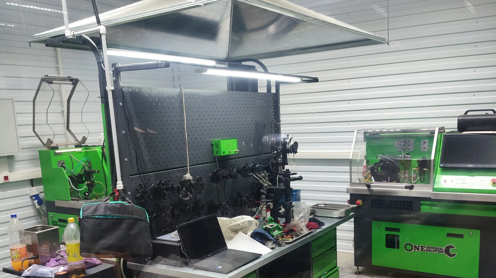
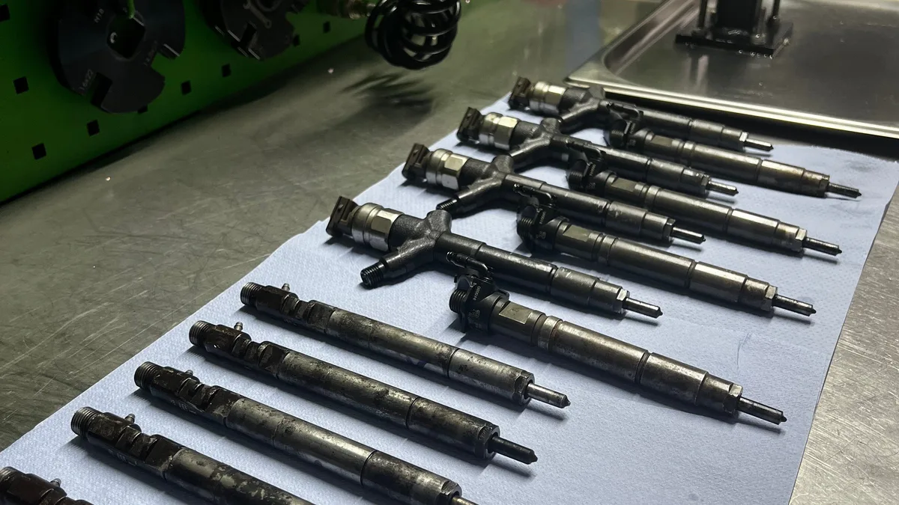
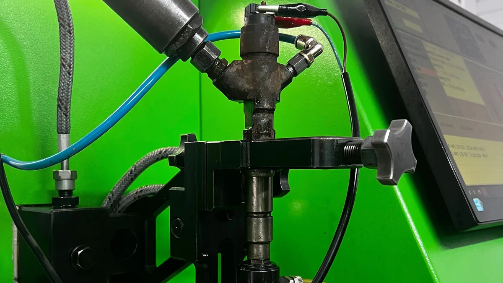
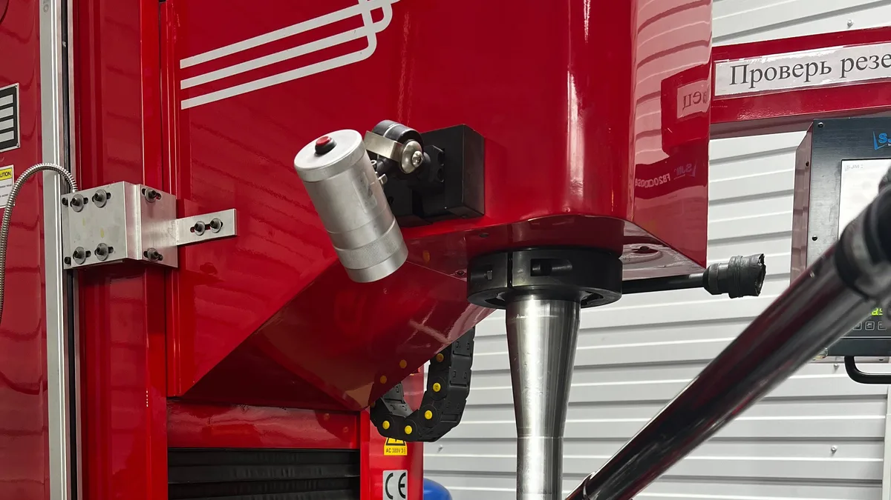

Автосервис в Йошкар-Оле · ул. Кожино, 41
Ремонт дизельных форсунок и ТНВД в Йошкар-Оле
Автосервис «Евро дизель» на улице Кожино: ремонт форсунок и топливной аппаратуры, диагностика, ремонт двигателей и турбин, шиномонтаж. Легковые и грузовые автомобили.
- 4,9 на Яндекс Картах, 37 отзывов
- Форсунки, ТНВД, турбины, ремонт двигателя
- Легковые, коммерческие и грузовые автомобили

Услуги: автосервис «Евро дизель» в Йошкар-Оле
Входит
- Ремонт и проверка форсунок, ремонт топливной системы, промывка инжектора
- Ремонт ТНВД и регулировка топливной аппаратуры
- Ремонт турбин, стартеров и автоэлектрики
- Компьютерная диагностика и ремонт двигателя
- Развал-схождение, шиномонтаж, замена масла
Отдельно, если нужно
- Запись на время через форму на сайте, затем звонок для подтверждения
- Адрес: Йошкар-Ола, ул. Кожино, 41, есть парковка
- Оплата картой и наличными, безналичный расчёт и постоплата
Цены на ремонт в Йошкар-Оле
Цены с карточки автосервиса. Итоговую сумму мастер называет после диагностики и согласует до начала работ.
Диагностика и топливная система
- Замер компрессии3000 ₽
- Мойка топливной рампы в ультразвуковой ванне2000 ₽
- Регулировка Д-245 Е-2 серии 7334000 ₽
Ремонт
- Ремонт форсунокуточнить
- Ремонт ТНВДуточнить
- Ремонт турбинуточнить
- Ремонт двигателяуточнить
Цены обновлялись 9 сентября. Точную стоимость уточняйте по телефону перед визитом.
Как записаться в автосервис в Йошкар-Оле
- 01
Выбрали услугу и время
Выберите услугу, день и час в форме - заявка сформируется, дальше позвоните по номеру +7 (8362) 34-30-00. Марку, год и что беспокоит расскажете по телефону.
- 02
Подтвердили время
Время подтверждаем по звонку: +7 (8362) 34-30-00.
- 03
Осмотр и согласование
Мастер осматривает автомобиль, называет работы и стоимость. Дальше - по вашему решению.
- 04
Выдача автомобиля
Осмотрите результат вместе с мастером до оплаты.



Что пишут клиенты «Евро дизеля»
Знают дизельные форсунки и ТНВД
«Единственные в городе, кто качественно делает дизельные форсунки и ТНВД» - EpanAnastasia, 13 марта 2023.
Показывают и объясняют
«Все моменты и ньюансы объяснили, показали и рассказали» - Kirill Andreevich, 20 января.
Обслуживают годами
«Обслуживаю автомобиль в этом сервисе семь лет» - Евгений Пирогов, 28 марта.
Отзывы с Яндекс.Карт
«Добрый день) Побывали в Евро Дизель, пригнали машину на диагностику, форсунка 2 показывала ошибку, машина троила. Ребята сделали диагностику, нашли проблему, устранили) Оперативно все сделали) спасибо) рекомендую)»
Алексей Чугунов · 6 июля
«Привёз ребятам форсунки с howo, сделали в кратчайшие сроки, всё качественно, современное оборудование, грамотное общение сотрудников. Все моменты и ньюансы объяснили, показали и рассказали.»
Kirill Andreevich · 20 января
«Обслуживаю автомобиль в этом сервисе семь лет, мастера настоящие профи, делают ремонт быстро, качественно и без заморочек»
Евгений Пирогов · 28 марта
Отзывы с карточки на Яндекс.Картах, без правок.
Частые вопросы
Какие работы делаете в Йошкар-Оле?
Ремонт форсунок и ТНВД, ремонт топливной системы, турбин, стартеров и автоэлектрики, ремонт двигателя, компьютерная диагностика, развал-схождение, шиномонтаж, замена масла в легковых автомобилях.
Какие автомобили принимаете?
Легковые, коммерческие и грузовые автомобили, спецтехнику; европейские, японские, корейские и китайские марки.
Сколько стоит диагностика и ремонт?
Замер компрессии - 3000 ₽, мойка топливной рампы в ультразвуковой ванне - 2000 ₽, регулировка Д-245 Е-2 серии 733 - 4000 ₽. Стоимость ремонта зависит от автомобиля и неисправности: мастер называет её после диагностики. Уточнить можно по телефону +7 (8362) 34-30-00.
Нужно ли записываться заранее?
Лучше записаться: выберите услугу, день и время в форме на сайте, затем позвоните по номеру +7 (8362) 34-30-00 для подтверждения.
Когда работает сервис и как оплатить?
Пн-Пт с 08:00 до 18:00, суббота с 08:00 до 16:00, воскресенье - выходной. Оплата картой, наличными, безналичный расчёт, возможны предоплата и постоплата.
Где находится автосервис?
Йошкар-Ола, улица Кожино, 41. Рядом есть парковка.
Запишитесь на ремонт форсунок, ТНВД или диагностику
- Адрес
- ул. Кожино, 41, Йошкар-Ола
- Часы
- Пн-Пт 08:00-18:00, Сб 08:00-16:00, Вс - выходной
- Телефон
- +7 (8362) 34-30-00